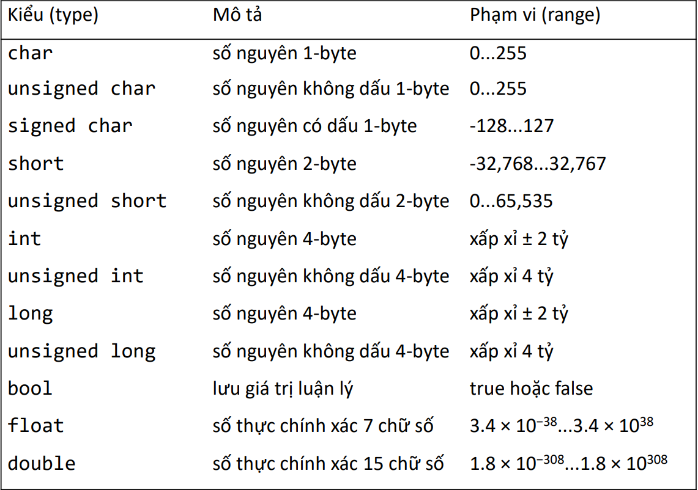
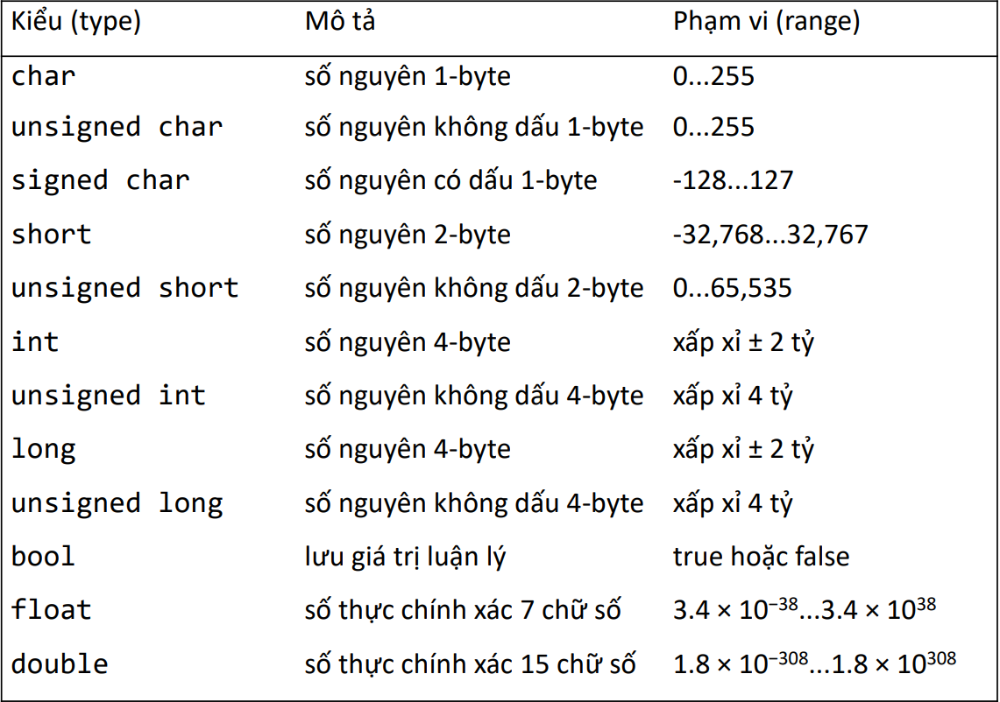
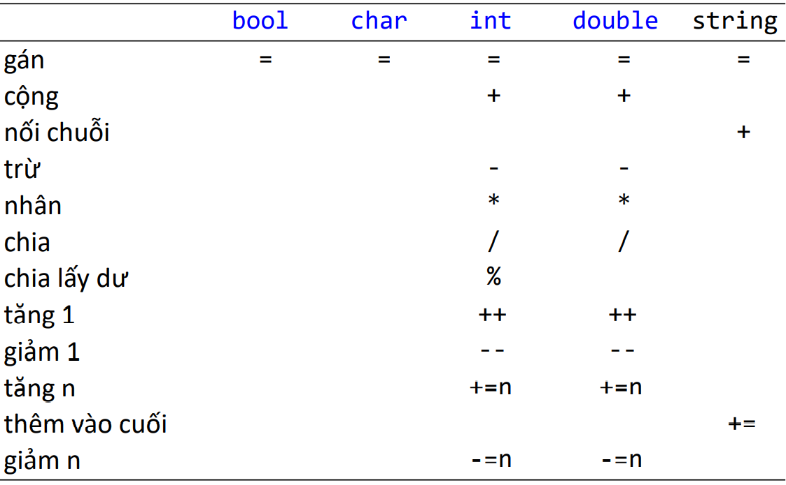
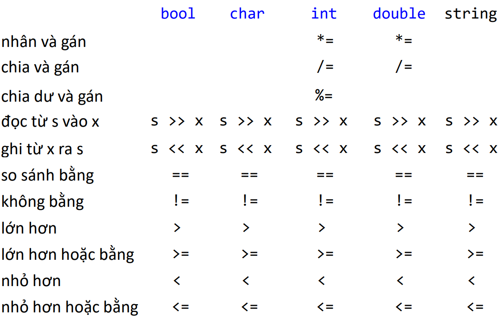
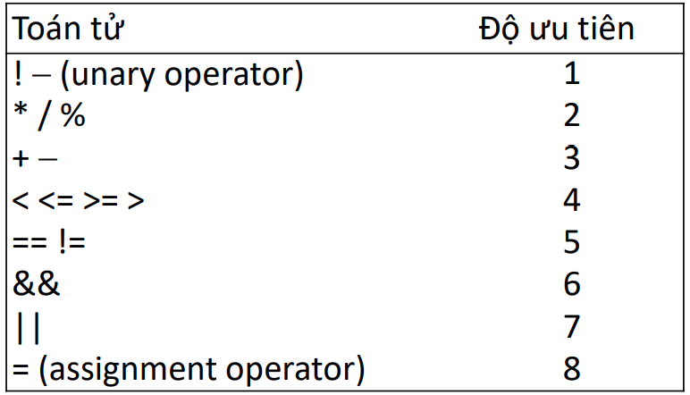
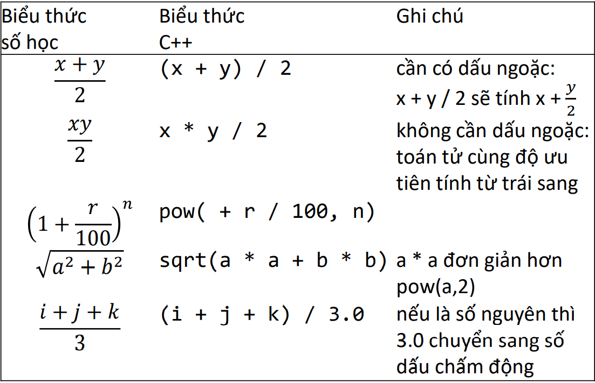
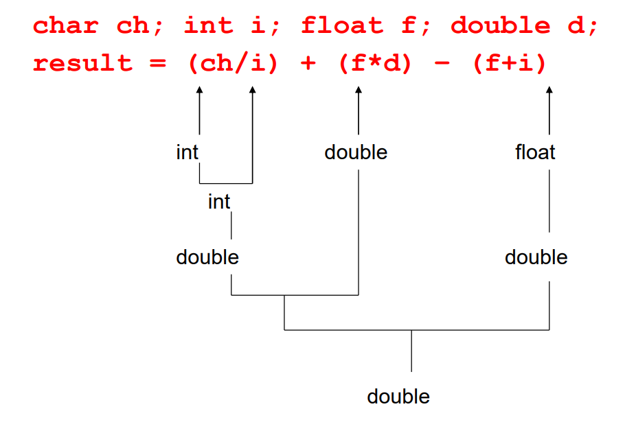
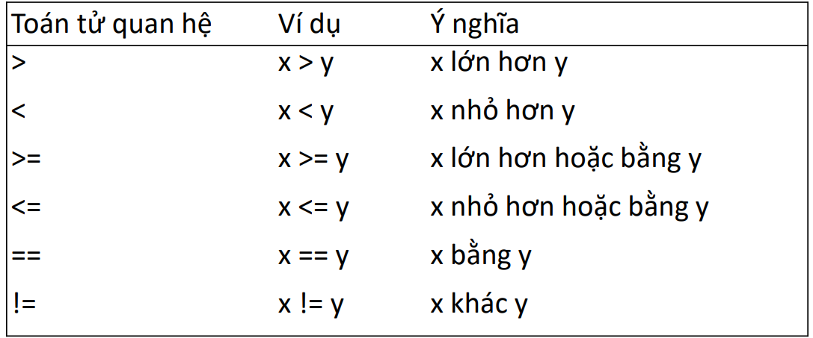
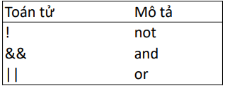
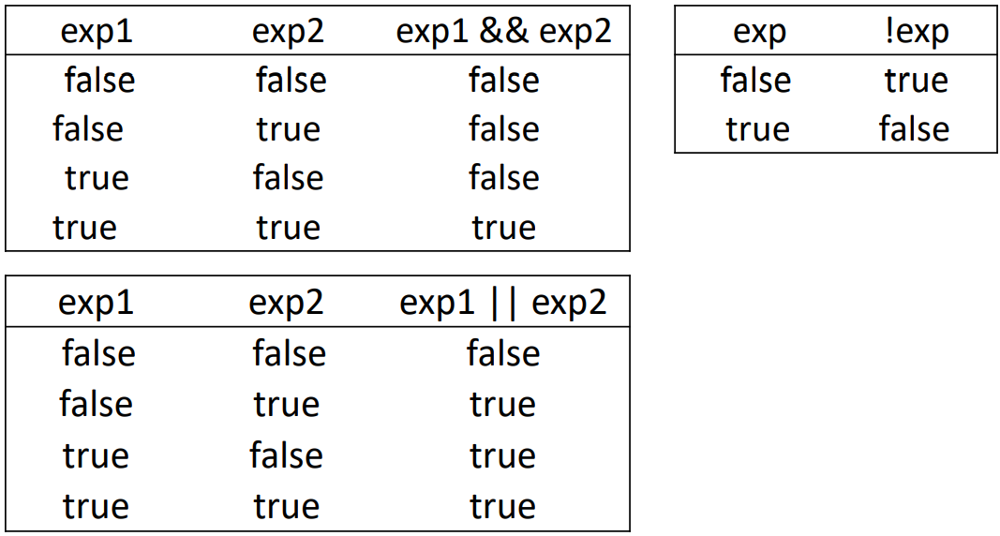

biến & kiểu dữ liệu
- Từ khóa
- Tên (name)
- Lưu ý khi đặt tên
- Quy ước đặt tên
- Kiểu dữ liệu
- Kiểu dữ liệu cơ bản
- Một số toán tử tương ứng với kiểu dữ liệu
- Biến
- Hằng
- Nhập dữ liệu
- Câu lệnh nhập dữ liệu
- Nhập dữ liệu kiểu string
- Câu lệnh gán
- Toán tử phức hợp
- Câu lệnh xuất
- Định dạng xuất
- Biểu thức
- Độ ưu tiên của toán tử
- Lưu ý khi viết biểu thức
- Biểu thức số học
- Một số hàm toán học
- Toán tử tăng giảm
- Chuyển đổi kiểu dữ liệu
- Biểu thức luận lý
- Toán tử quan hệ
- Toán tử luận lý
Từ khóa(keyword)
- Từ khóa hay từ dành riêng (keywords/reserved words) là các từ có ý nghĩa đặc biệt đối với chương trình dịch.
- Ví dụ một số từ khóa trong C++: int double char const void return ...
- Các ký tự trong từ khóa C++ là chữ thường. Không được đặt các tên trong chương trình trùng với từ khóa.
Tên (name)
- Tên (name) hay danh hiệu, định danh (identifier) là tên biến, tên hằng, tên hàm, tên kiểu dữ liệu do người lập trình định nghĩa và được đặt theo luật.
- Luật đặt tên trong C++:
- Tên phải bắt đầu bằng ký tự.
- Tên chỉ gồm ký tự chữ, số và dấu gạch dưới. Không được phép có khoảng trắng và các ký tự khác (dấu chấm, dấu phẩy, $, %...)
- Tên không được trùng với từ khóa.
- Tên trong C++ phân biệt chữ thường và hoa (case sensitive).
- Ví dụ các tên hợp lệ:
- x grossPay number_of_studentes
- n2
- Polygon
- PI
- TAX_RATE
- Ví dụ các tên không hợp lệ:
- 2x start$time
- Start menu
- RATE%
- 2018Sales
- C++ phân biệt ký tự hoa và thường, x và X là hai tên khác nhau.
Lưu ý khi đặt tên
- Nên chọn tên có ý nghĩa, giúp người đọc có thể hiểu chương trình một cách dễ dàng.
-
Không nên viết tắt vì sẽ gây khó hiểu:
mtbf TLA myw nbv - Các tên ngắn gọn đã được quy ước:
- x: biến cục bộ
- i: chỉ số của vòng lặp
- Không nên dùng tên quá dài:
the_number_of_elements
remaining_free_slots_in_the_symbol_table -
Nên đặt tên ngắn gọn, có nghĩa:
partial_sum element_count staple_partition
Quy ước đặt tên
- Tên biến: lowerCamelCase
double centimeter;
int totalInches; - Tên hàm: lowerCamelCase, bắt đầu bằng động từ.
double calculateAverage();
void run();
void print();
- Tên kiểu dữ liệu do người dùng định nghĩa: UpperCamelCase
Graph
Square
- Tên hằng: ký tự in hoa, dùng dấu gạch dưới phân cách các từ.
const int MAX_PARTICIPANTS = 10;
Kiểu dữ liệu
- Dữ liệu có thể là một ký tự, một số hoặc một đoạn văn bản...
- Khi viết chương trình ta phải cho máy tính biết kiểu dữ liệu (data type) cần xử lý.
- Các ngôn ngữ lập trình đều sử dụng hai kiểu dữ liệu cơ bản:
- Dữ liệu số (numeric data type): số nguyên (integer) và số dấu chấm động (floating point).
- Dữ liệu chuỗi ký tự (character string data type): ký tự (character)
- Ngoài ra, các ngôn ngữ lập trình còn có kiểu dữ liệu luận lý (boolean data type).
Kiểu dữ liệu trong C++
 

Kiểu dữ liệu cơ bản
bool
- Kích thước: 1 byte.
- Lưu giá trị true (khác 0) hoặc false (0).
char
- Kích thước: 1 byte.
- Lưu trữ các ký tự chữ, ký tự số và ký tự đặc biệt trong bảng mã ASCII (0-255). Ký tự đặt giữa hai dấu nháy đơn:
'A' 'a' '0' '*' '+' '&' ' ' (character literals) - Một số ký tự đặc biệt:
- '\n': newline
- '\t': tab
- '\b': backspace
- '\\': backslash
- '\'': single quote
- '\"': double quote
int
- Kích thước: 4 byte.
- Lưu các giá trị từ -2,147,483,648 đến 2,147,483,647.
- Giá trị cực đại: INT_MAX
- Gía trị cực tiểu: INT_MIN
- Lưu ý khi ghi các giá trị số nguyên (number literals):
- Số nguyên dương không cần dấu +.
- Không có dấu phẩy (,) trong số nguyên.
- Ví dụ: -6728 -67 0 78 35267 763
double
- Kích thước: 8 byte
- Lưu các giá trị từ 1.7 × 10−308 đến 1.7 × 10308 (15 chữ số).
- C++ biểu diễn số thực dùng dấu chấm động.
- Ví dụ: 1.23 .23 0.23 1.0 1.2e10 1.23e-15
string
- Kiểu string (class string) lưu trữ chuỗi ký tự. Đây là kiểu dữ liệu có sẵn trong thư viện.
- Chuỗi ký tự gồm 0 hoặc nhiều ký tự và được đặt giữa hai dấu nháy kép. "It is a beautiful day."
"Mickey"
"" - Độ dài chuỗi tùy ý.
- Để sử dụng kiểu string ta phải thêm chỉ thị:
#include <string>
Một số toán tử tương ứng với kiểu dữ liệu
 Biến
- Biến (variable) là một vùng nhớ dùng để lưu trữ một giá trị dữ liệu. Mỗi biến có tên (name) và kiểu dữ liệu (type).
- Dữ liệu được lưu trữ trong biến gọi là giá trị (value) của biến.
- Khi thực hiện, chương trình có thể đọc, ghi, hoặc thay thế các giá trị của biến.
- C++ yêu cầu phải khai báo biến trước khi sử dụng.
- Để khai báo một biến, ta cần phải biết kiểu dữ liệu (data type) mà chương trình sẽ sử dụng (số, chuỗi...).
- Cú pháp khai báo biến:
dataType variableName;- dataType: kiểu dữ liệu (có trong C++, là kiểu cơ bản hoặc kiểu do người dùng tạo).
- variableName: tên biến (theo luật đặt tên của C++).
- Ví dụ
int soluong;
double tyle;
char loaiSP;
string tenSP; - Có thể khai báo nhiều biến có cùng kiểu dữ liệu:
int a, b, c, d; - Cú pháp khai báo biến và khởi tạo giá trị:
dataType variableName = initialValue; - Ví dụ
int soluong = 5;
double tyle = 0.05;
char loaiSP = 'K';
string tenSP = "Kem danh rang";
Một số lỗi thường gặp
- Sử dụng biến chưa khai báo.
double x = 12 * y; //loi vi bien y chua khai bao
double y = 0.0296; - Sử dụng biến chưa được khởi tạo giá trị.
double x;
double y = x * 2; - Gán giá trị khác kiểu cho biến.
string hoten = 39; //loi
int n = "Hoai Thu"; //loi
Hằng
- Hằng (named constant) là một vùng nhớ dùng để lưu trữ một giá trị dữ liệu không thay đổi trong suốt thời gian chương trình thực thi.
- Cú pháp định nghĩa hằng:
constdataType constantName = value;- dataType: kiểu dữ liệu
- constantName: tên hằng (theo luật đặt tên của C++), thường dùng chữ in hoa.
- value: giá trị phù hợp với kiểu dữ liệu.
- ví dụ
const double PI = 3.141593;
const double CM_PER_INCH = 2.54;
const int SISO = 20;
const char BLANK = ' ';
Nhập dữ liệu
- Dùng câu lệnh nhập (input statement): đọc dữ liệu từ bàn phím.
cin >> variableName - Ví dụ
cin >> bankinh; - Dùng câu lệnh gán (asignment statement).
variableName = expression;- Giá trị của biểu thức phải phù hợp với kiểu dữ liệu của biến.
- Dấu = gọi là toán tử gán (assignment operator).
- Ví dụ:
dientich = 3.14 * bankinh * bankinh;
Câu lệnh nhập dữ liệu
- Đối tượng cin được sử dụng cùng với toán tử >>.
- Toán tử >> sẽ lấy ra các ký tự từ đối tượng và chuyển vào bộ nhớ, cho đến khi gặp ký tự khoảng trắng (tab, space, enter).
Nhập dữ liệu kiểu string
getline(cin, str);- str là biến có kiểu string
- đọc một chuỗi, kể cả khoảng trắng và lưu vào str
Ví dụ
#include <iostream>
#include <string>
using namespace std;
int main()
{
string hoten;
cout << "Nhap vao ho va ten: ";
getline(cin, hoten);
cout << "Chao ban " << hoten << endl;
}
Câu lệnh gán
- Câu lệnh gán (assignment statement) dùng để gán giá trị cho biến trong khi chương trình đang thực hiện.
int a = 3;
a = 4;
int b = a;
b = a + 5;
a = a + 7; - Kiểu dữ liệu của biểu thức trong câu lệnh gán phải phù hợp với kiểu dữ liệu của biến.
- Có thể dùng câu lệnh gán cho biến kiểu string:
string s1 = "alpha";
s1 = "beta";
string s2 = s1;
s2 = s1 + "gamma";
s1 = s1 + "delta"; - Câu lệnh khai báo và khởi tạo (initialization): tạo một biến mới và gán cho biến giá trị ban đầu.
- Câu lệnh gán (assignment): gán cho biến đã có một giá trị mới.
Toán tử gán phức hợp
- Các toán tử gán phức hợp (composite assignment operators) dùng để rút ngắn câu lệnh gán:
- += cộng gán
- -= trừ gán
- *= nhân gán
- /= chia gán
- %= modulo gán
- Ví dụ:
- a += 7; //a = a + 7
- b -= 9; //b = b - 9
- c *= 2; //c = c * 2
- counter += 1; //counter = counter + 1; tương đương ++counter;
Câu lệnh xuất
- Câu lệnh xuất (output statement): in dữ liệu ra màn hình.
cout << expression or manipulator << ...;- expression: tính giá trị của biểu thức sau đó in giá trị.
- manipulator: định dạng dữ liệu xuất.
- Ví dụ:
cout << 29 / 4 << endl; cout << 'A' << endl; cout << "Hello \nthere!" << endl; cout << "4 + 8 = " 4 + 8 << endl; cout << "...1\n....2\n.....3\n"; hoặc cout << "...1" << endl << "....2" << endl << ".....3" << endl;
Định dạng xuất
- Môi trường lập trình thường xuất 6 chữ số có nghĩa (mặc định):
cout << 12.345678 << endl; //12.3457 - Để định dạng dữ liệu xuất, ta phải thêm chỉ thị:
#include <iomanip> - Ví dụ hiển thị 2 chữ số lẻ:
cout << fixed << setprecision(2) <<12.345678 << //12.35
Biểu thức
- Biểu thức (expression) dùng để tính toán các giá trị, được tạo thành từ toán tử (operators) và toán hạng (operands).
- Toán tử: thực hiện tính toán với toán hạng và cho kết quả là giá trị có một kiểu.
- Toán hạng: dữ liệu được toán tử tính toán.
- Ví dụ:
2 + 3 * 5
x - y / 7
x * 10.5 + y - 16.2
2 + 3.5
6 / 4 + 3.9
5.4 * 2 - 13.6 + 18 / 2
Độ ưu tiên của toán tử
- Khi tính giá trị biểu thức: áp dụng luật ưu tiên của các toán tử. 
- Ví dụ:
(dai + rong) * 2 khác với dai + rong * 2
a * b + c / d nghĩa là (a * b) + (c / d) không phải a * (b + c) / d
Lưu ý khi viết biểu thức
- Thêm khoảng trắng trước và sau các toán tử trong biểu thức.
x1 - (-b + sqrt(b * b - 4 * a * c)) / (2 * a);
dễ đọc hơn:
x1-(-b+sqrt(b*b-4*a*c))/(2*a); - Không thêm khoảng trắng sau tên hàm.
sqrt(x),
không viết
sqrt (x)
Biểu thức số học
- Biểu thức số gồm toán tử số học và các toán hạng là số nguyên hoặc số dấu chấm động.
- Toán tử số học: + - * / %
- Thứ tự ưu tiên: * / % + -
- Lưu ý: toán tử % (modulo) chỉ dùng cho kiểu số nguyên.
- Biểu thức kiểu số nguyên nếu các toán hạng có kiểu số nguyên.
- Biểu thức kiểu số dấu chấm động nếu các toán hạng có kiểu số số dấu chấm động.
- Ví dụ biểu thức kiểu số nguyên:
int dai = 4;
int rong = 5;
int dientich, chuvi;
dientich = dai * rong;
chuvi = (dai + rong) * 2 - Ví dụ biểu thức kiểu số dấu chấm động:
const double PI = 3.1414296;
double bankinh = 5.5;
double dientich;
dientich = PI * bankinh * bankinh; - Ví dụ viết các biểu thức số học bằng C++: 
- Nếu chia hai số nguyên thì phần dư sẽ bị cắt bỏ.
int tongsogiay = 3790; int sogio = tongsogiay / 3600;// sogio == 1 - Phép chia lấy dư % dùng để lấy phần dư.
int sophut = tongsogiay % 3600 / 60;//sophut==3
int sogiay = tongsogiay % 3600 % 60;//sogiay==10
- Tính lũy thừa và tính căn bậc 2: sử dụng hàm thư viện.
𝑥: sqrt(x)
x n: pow(x, n) - Toán tử tăng 1:
++variable
variable++ - Toán tử giảm 1:
--variable
variable-- - Ví dụ
- ++count; hoặc count++;
- --count; hoặc count--;
- Biểu thức có thể gồm nhiều kiểu dữ liệu khác nhau. 2.5/2: double chia cho
int , kết quả làdouble . - Nếu toán hạng có kiểu double thì kết quả là double, nếu toán hạng có kiểu int thì kết quả là int.
- 5/2 kết quả là 2 (không phải 2.5).
- 2.5/2 nghĩa là 2.5/
double (2) kết quả là 1.25. - 'a'+1 nghĩa là
int ('a')+1
- Khi cần chương trình dịch sẽ chuyển đổi toán hạng kiểu
int sang double, hoặc toán hạng kiểu char sangint . Sau đó chương trình dịch sẽ chuyển đổi kết quả lần nữa để sử dụng như là giá trị khởi tạo, hoặc giá trị bên vế phải phép gán. - Ví dụ:
double d = 2.5;
int i = 2;
double d2 = d/i;//d2 == 1.25
int i2 = d/i;//i2 == 1
d2 = d/i; //d2 == 1.25
i2 = d/i; //i2 == 1 - Ví dụ chuyển độ Celcius sang độ Fahrenheit: kết quả là số nguyên.
double doC;
cin >> doC;
double doF = 9/5 * doC + 32; // 9/5==1, khong phai 1.5Giải pháp: chuyển 9 hoặc 5 hoặc cả hai sang double:
double doC;
cin >> doC;
double doF = 9/5 * doC + 32; - expression: biểu thức
- type: kiểu dữ liệu
Lưu ý
Một số hàm toán học
Để sử dụng hàm toán học, thêm header file cmath vào đầu chương trình:
#include <iostream>
Toán tử tăng và giảm
Chuyển đổi kiểu
Chuyển đổi kiểu
Chuyển đổi kiểu tường minh
static_cast
static_cast<int>(7.9) 7
static_cast<double>(25) 25.0
static_cast<double>(5+3) =static_cast<double>(8)
=8.0
static_cast<double>(15)/2 =15.0/2 = 15.0/2.0
= 7.5
static_cast<double>(15/2) =static_cast<double>(7)
=7
Biểu thức luận lý
- Biểu thức luận lý có giá trị là true hoặc false, được tạo bởi toán tử luận lý và toán tử quan hệ.
- Toán tử luận lý: ! && ||
- Toán tử quan hệ: < > <= >= == !=
Thứ tự ưu tiên: ! < <= >= > == != && ||
- Biểu thức luận lý được sử dụng trong các câu lệnh rẻ nhánh if, if...else và câu lệnh lặp for, while, do...while
Toán tử quan hệ
- Toán tử quan hệ dùng để so sánh các giá trị trong chương trình, cho kết kết quả là true hoặc false. 
- Các giá trị so sánh phải có cùng kiểu dữ liệu.
8 < '5': không thể so sánh. - So sánh ký tự: dựa vào mã ASCII.
' ' < 'a' true
'R' > 'T' false
'+' > '*' false
'A' >= 'a' true - So sánh chuỗi: theo thứ tự từ điển.
string s1 = "Hello"; string s2 = "Hi"; string s3 = "Air"; string s4 = "Bill"; s1 < s2 true s3 < "An" true s1 == "hello" false s3 <= s4 true
Toán tử luận lý
- Toán tử luận lý dùng để kết hợp các biểu thức luận lý. 
- Ví dụ:
(gioitinh == NU) && (tuoi >= 60) (diemGK >= 9 ) || (diemCK >= 9) !(xeploai == ’D’) - Bảng chân trị: 
- Ví dụ:
bool found = true; int age = 20; double hours = 45.30; double overTime = 15.0; int count = 20; char c = 'B'; !found false hours > 40.00 true age == 20 true found && (age >= 18) false hours + overTime <= 75 true (count >= 0) && (count <= 100) true ('A' <= c) && (c <= 'Z') true